Teatro dos Bons Hábitos
Projeto NTICS Projetos • Lei Rouanet
Projeto NTICS Projetos • Lei Rouanet
Sejam todas e todos bem vindos!!! “Descobrindo o Mundo Mágico dos Bons Hábitos” O projeto Teatro dos Bons Hábitos levou para alunos de escolas públicas a uma aventura encantada, onde a diversão e a aprendizagem caminharam lado a lado. Neste colorido jardim mágico, personagens vibrantes ganharam vida para ensinar, de maneira leve e envolvente, a importância dos bons hábitos para a saúde e o bem-estar. Através de histórias e lições simples, a peça inspirou os pequenos a adotar hábitos saudáveis de forma natural e divertida.
"O Jardim Encantado dos Hábitos Saudáveis" é uma encantadora peça teatral voltada para o público infantil, que aborda a importância dos bons hábitos na infância e promove o bem-estar das crianças. A história se passa em um colorido jardim mágico, onde personagens encantadores e divertidos ganham vida para ensinar às crianças valiosas lições sobre hábitos saudáveis.
Sejam todas e todos bem vindos!!! “Descobrindo o Mundo Mágico dos Bons Hábitos” O projeto Teatro dos Bons Hábitos levou para alunos de escolas públicas a uma aventura encantada, onde a diversão e a aprendizagem caminharam lado a lado. Neste colorido jardim mágico, personagens vibrantes ganharam vida para ensinar, de maneira leve e envolvente, a importância dos bons hábitos para a saúde e o bem-estar. Através de histórias e lições simples, a peça inspirou os pequenos a adotar hábitos saudáveis de forma natural e divertida.

"O Jardim Encantado dos Hábitos Saudáveis" é uma encantadora peça teatral voltada para o público infantil, que aborda a importância dos bons hábitos na infância e promove o bem-estar das crianças. A história se passa em um colorido jardim mágico, onde personagens encantadores e divertidos ganham vida para ensinar às crianças valiosas lições sobre hábitos saudáveis.
13 fotos do projeto
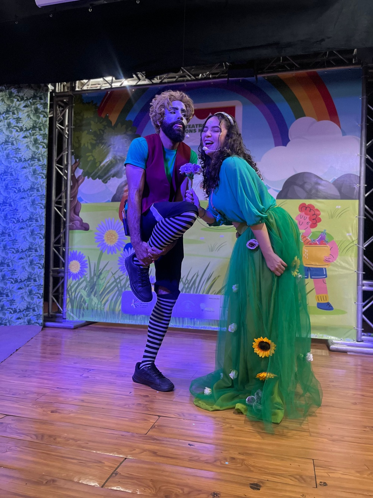
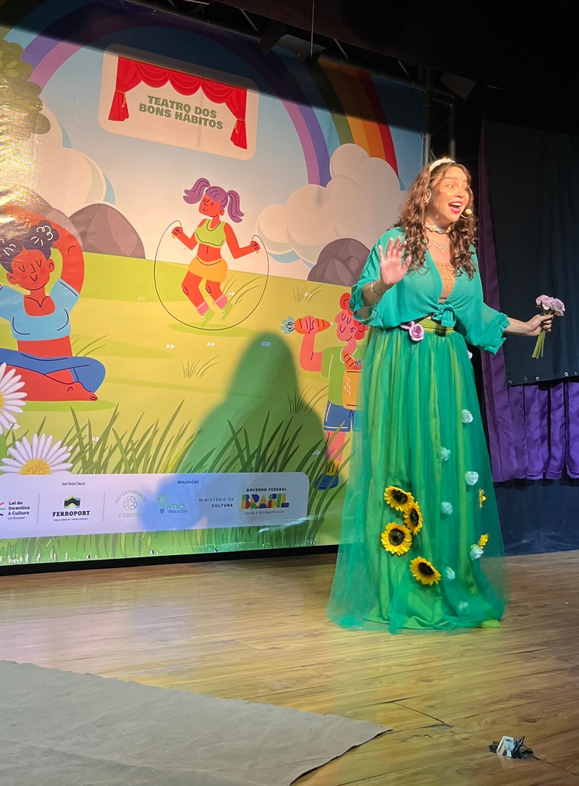
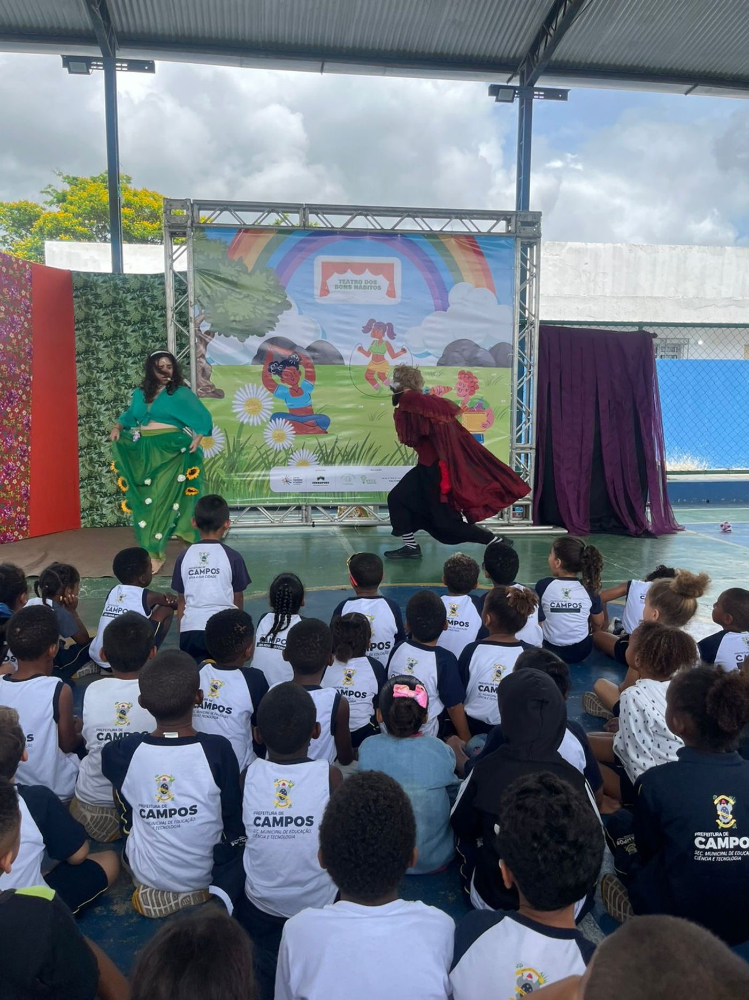
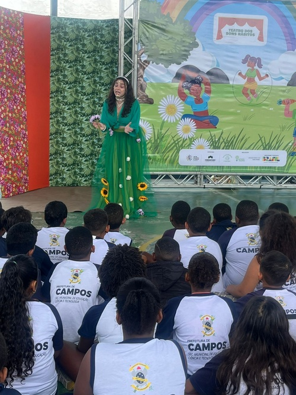
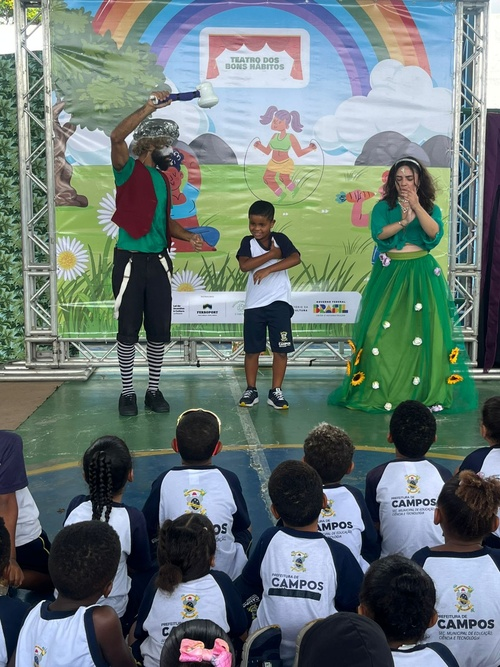
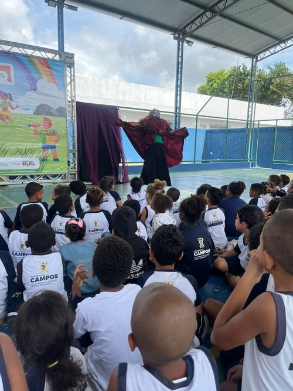

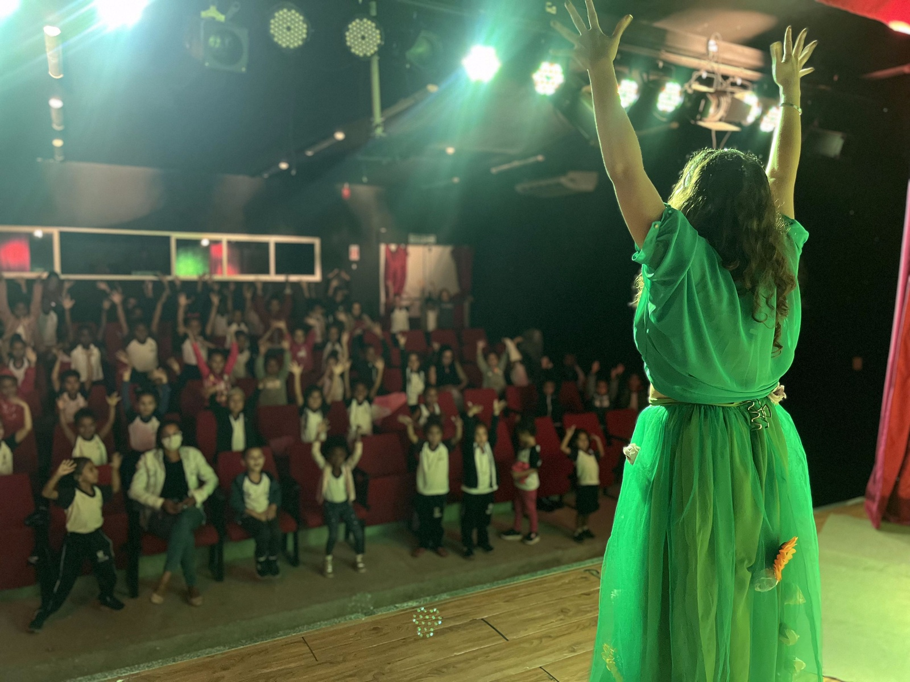
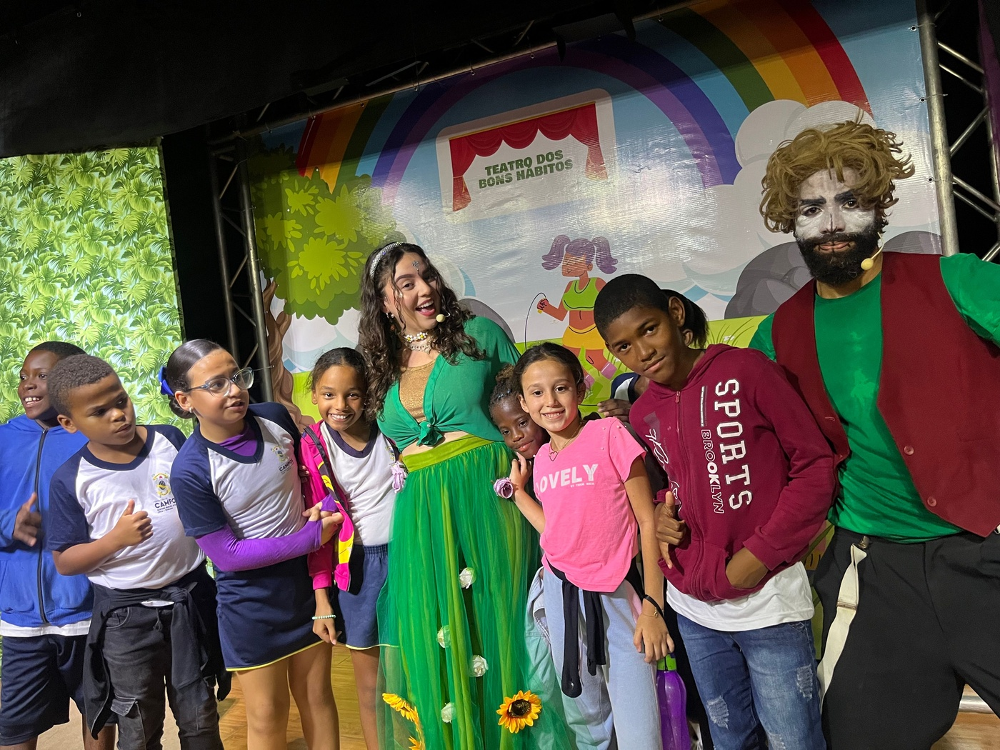
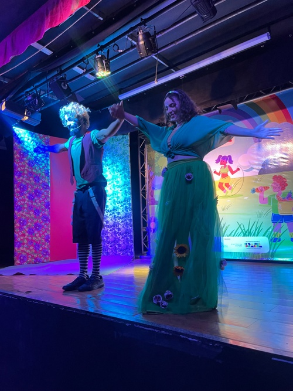
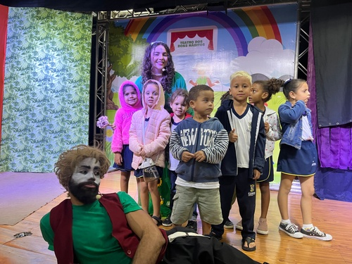
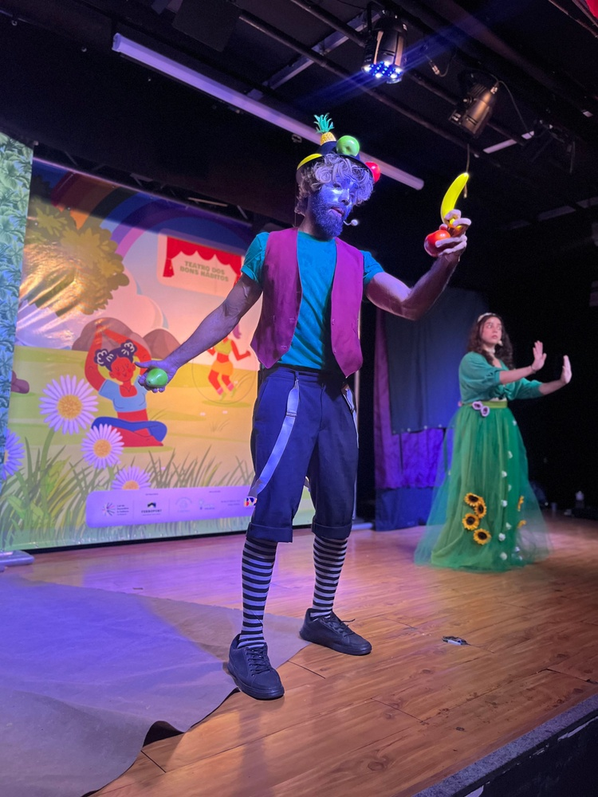